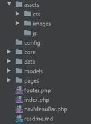
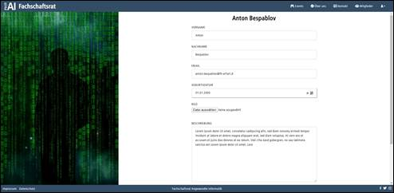

Projektdokumentation
Internetauftritt des Fachschaftsrates der Angewandten Informatik
Website
FSR – Angewandte Informatik
Inhaltsverzeichnis
1.2 Teammitglieder und Projektrollen
1.2.1 Detailierte Aufteilung der Aufgaben:
3.7.1 Breites Layout (Ohne Bild)
3.7.2 Unterteiltes Layout (mit Bild)
3.8.2 Zwischenstand der Gliederung
4.4 Use Case: edit/delete User
4.5 Use Case: edit/delete Event
4.6 Use Case: Event Registration
6.2 Datentyp Längen (min – max):
9.2 Besprechung mit Herrn Friess (15.11.2019)
9.3 Besprechung mit Herrn Friess (24.11.2019)
9.4 Besprechung mit Herrn Friess (07.12.2019)
9.5 Besprechung mit Herrn Kruse (18.12.2019)
9.6 Zwischenpräsentation (14.01.2019)
1. Projektteam
1.1 Projektteam
Die Webseite entstand in Zusammenarbeit mit Niclas Jarowsky und Danny Steinbrecher im Rahmen des Fachübergreifendes Projektes von Grundlagen- und Dynamische Webprogrammierung
1.2 Teammitglieder und Projektrollen
Im Rahmen des Projektes hat sich ein Schema herausgestellt, wer für welchen Bereich zuständig ist. Neben dem Design, dem Inhalt und anderen Allgemeinen Themen, haben sich vor allem 2 große Themengebiete herauskristallisiert. Der Nutzer- und Eventbereich. So hat jeder Mitarbeiter seine klaren Aufgabenfelder, die jedoch immer wieder gemeinsame Schnittstellen gefunden haben.
Herr Steinbrecher hatte sich vor allem um den Bereich rund um die Nutzer gekümmert. Herr Jarowsky dagegen um den Bereich der Events.
Herr Steinbrecher ist für die Dokumentation aller Schritte eines Projektes verantwortlich. So wird eine lückenfreie Historie sichergestellt und Fehler können besser analysiert und später vermieden werden.
1.2.1 Detailierte Aufteilung der Aufgaben:
|
Danny Steinbrecher |
||
|
Nutzerverwaltung |
Hier galt es eine Übersicht aller Nutzer der Webseite zu erstellen. Darunter fallen die Admins, die Mitglider (FSR) und die einfachen Nutzer. |
|
|
Mitgliederansicht |
Hier werden alle Mitglieder des FSR aufgelistet. |
|
|
Registrierung |
Registrierung für Mitarbeiter und Nutzer (Rollen werden vom Admin nach der Registrierung vergeben) |
|
|
Login |
Login für die Nutzer, Mitglieder und Admins! |
|
|
Startseite |
· Landingpage · Bildergalerie (zufällige Auswahl an Bildern aus einem Ordner auf dem Server)! · Counter für das nächste anstehende Event |
|
|
Rechtehandling (Admin, Member, User) |
Um für die speziellen Internen Bereiche Zugriff zu bekommen wurden Rollen verteilt (Admin, Member, User). |
|
|
Passwort Hash |
Um ein sicheres Nutzerlogin zu gewährleisten, wurden
die Passwörter nicht im Klarnamen, sondern mit einem Hash auf der Datenbank
gespeichert. |
|
|
Validierung |
Sowohl auf Seiten von PHP, wie auch JavaScript musste eine Validierung der Daten vorgenommen werden, damit keine Falschen (im Sinne der Datenbank) Daten in die Datenbank geschrieben werden. |
|
|
Datenbank |
Um Nutzer wie auch Events zu speichern mussten wir eine gut Funktionierende Datenbank aufbauen. |
|
|
Dokumentation |
|
|
|
ReadMe |
Kurze Einleitung und Installationsanleitung |
|
|
Niclas Jarowsky |
||
|
Eventverwaltung |
Hier galt es eine Übersicht aller Events des Fachschaftsrates zu
erstellen. Darunter fallen die sowohl die aktuellen (noch kommenden), wie
auch die vergangenen Events. |
|
|
Eventseite |
Hier werden die Events angezeigt. Wichtig war hier, dass das nächste
Event ganz oben steht, danach die Kommenden. |
|
|
Kontakt |
Um mit dem FSR in Kontakt zu treten, wurde eine Kontaktseite
aufgebaut! Hier kann man eine E-Mail (über das Formular) an den FSR senden. |
|
|
Über Uns |
Hier sollte eine kleine Einleitung zu unserem FSR stehen und vor allem die Kontaktdaten. Wie, wann und wo wir erreichbar sind. Eine Verlinkung zur Kontaktseite sowie auch eine Karte und ein Bild vom Campus, auf dem, durch einen roten Punkt, unser Büro gekennzeichnet ist. |
|
|
Locations erstellen |
Hier werden alle neuen Locations erstellt. Durch die Eingabe von Straße, Hausnummer, Postleitzahl, Ort und optional den Raum, werden die die neuen Locations in der Datenbank angelegt. |
|
|
Eventfilter |
Hier galt es Filter an zu legen um die angezeigten Events zu filtern. Sortieren bzw. filtern kann man nach Ort, Location und Datum. |
|
|
Impressum |
Hier galt es ein Impressum zu erstellen. |
|
|
Datenschutz |
Hier galt es ein Datenschutz zu erstellen. |
|
|
Bilderupload |
Hochgeladene Bilder werden auf dem Server unter assets/images/upload/events abgespeichert und umbenannt. Namenserstellung bei Events: event-Datum-Uhrzeit Namenserstellung bei Usern: user-Datum-Uhrzeit |
|
1.3 Gruppenmanifest
1. Wöchentliches Gruppenmeeting donnerstags 9:45Uhr
2. Kommunikationsmittel sind das persönliche Gespräch, Discord und OneNote
3. Alle Arbeiten werden gegengelesen
4. Aufträge und Meilensteinziele müssen bereits 24h vor dem Termin fertig sein
5. Projektplanung erfolgt im GitHub
6. Issues (GitHub) sind selbstständig anzulegen und zu bearbeiten
7. Missstände müssen klar und unverzüglich angesprochen werden
8. Jeder darf und soll seine Meinung und Erfahrung zum Thema äußern
9. Nicht in Details verlieben
10. Alle 2 Wochen während eines Projekts findet eine Teambuildungmaßnahme außerhalb der Projektarbeit statt
11. Sämtliche Projektprozesse und Arbeiten sind zu dokumentieren
12. Code Gestaltung nach CleanCode
2. Projektbeschreibung
Hier wird beschrieben, was die Projektidee ist und wie wir darauf gekommen sind
2.1 Ideenfindung
Zunächst war unser Gedanke, dass wir eines der beiden Projektideen aus dem letzten Semester umsetzen wollten (aus dem Kurs DB2 / SWT1). Dennoch haben wir eine Brainstormrunde gemacht und Ideen aufgeschrieben.
Unter anderem ein Online-Plattenladen, ein Werkzeugverleih, eine Infoseite zu Events in und um Erfurt, …
Dann wurde die Idee mit dem Fachschaftsrat genannt und wir waren beide sofort begeistert. Da wir auch beide im FSR tätig sind liegt der Gedanke nahe für unsere Truppe einen Web-Auftritt zu erstellen, den es bis dato noch nicht gibt.
2.2 Ausgangssituation
Der Fachschaftsrat der Angewandten Informatik veranstaltet einige Events im Jahr und nutzt zur Verbreitung der Ankündigungen zurzeit verschiedene Externe Quellen (Twitter, Facebook, …). Neben den Events sind wir auch Ansprechpartner für viele Studierende. Jedoch fehlt hier ein Zentraler Anlaufpunkt für Interessierte und Nutzer. Dies soll nun mit Hilfe einer eigenen Webseite für den Fachschaftsrat der Angewandten Informatik geschehen. Ebenso soll der FSR auch ein wenig besser nach außen Präsentiert werden.
3. Aufbau Webseite
Hier sehen Sie wie wir unsere Homepage gegliedert haben und einen ersten ausblick, welchen Bereich man wann (mit welchem Zugriff) sehen kann. Hier haben wir auch direkt am Anfang die Bezeichnungen der Seiten festgelegt (ist nur intern sichtbar, da wir ein MVC aufgebaut haben und uns somit nach Außen immer nur auf der index.php bewegen)
3.1 Bereiche der Webseite
Die Webseite soll in 3 große Bereiche geteilt werden. Statische-, Dynamische Seiten und einen internen Bereich für die Verwaltung.
3.1.1 Statische Seiten
Hier sollen unter anderem Informationen zum FSR beschrieben werden.
· Startseite
· Über Uns
· Kontakt
· Impressum
· Datenschutz
· (Dokumentation)
3.1.2 Dynamische Seiten
Zunächst soll für den Besucher der Seite eine Übersicht der Aktuellen Events und eine Auflistung aller Mitglieder im FSR (aktiv wie auch inaktiv) zur Verfügung gestellt werden.
· Events
· Mitglieder (aktive und inaktive)
3.1.3 Interner Bereich
Im internen Bereich sollen Registrierte Nutzer (Member und Admin) die Möglichkeit haben z.B. Events anzulegen und Nutzer verwalten lassen. Die Nutzerverwaltung steht nur dem Admin zur Verfügung!
· Nutzerverwaltung
· Eventverwaltung
3.2 Erstes Layout
Wir haben uns zunächst mal in Adobe XD ein wenig ausgetobt und anhand einiger Webseiten uns Ideen geholt. Dabei sind wir zunächst beifolgendem Design gelandet.
Einige der Elemente haben es auch in die finale Version geschafft. Hier fehlte natürlich noch einiges, wie z.B. die Navigation und der Fußbereich.
3.3 Finale Version
3.4 Schriftart
Da wir eine Seite für den Fachschaftsrat der Angewandten Informatik bauen, lag die Verwendung der gleichen Schriftart nahe, welche auch auf der Webseite der AI verwendet wird.
Somit verwenden wir auf der Seite FF-Transit Web.
3.5 Farben
Bei den Farben haben wir uns ähnlich wie bei den Schriften an die Vorlage der AI-Webseite orientiert. Somit ist es eine Kombination aus einem Blau – Weißen Design geworden. Leider fehlt hier eine Aktzentfarbe, welche wir jedoch nicht einbauen wollten, da wir uns gerne in das Konzept der Gestaltung der AI-Webseite anlehnen wollten.
Hier könnte man im Nachhinein vlt nochmal Hand anlegen und etwas mehr Schwung in die Seite bringen! Aus dem Grunde haben wir es auch mit in den Bereich Ausblick hinzugefügt!
3.6 Schema
3.7 Bereiche Webseite
Wir haben uns verschiedene Webseiten angeschaut und uns versucht auf ein Grundlayout zu einigen. Dabei konnten wir uns recht schnell auf ein Schlichtes aber dennoch nicht langweiliges Layout einigen. Wir haben uns außerdem dazu entschieden die Webseite mit 2 möglichen Versionen aufzubauen.
3.7.1 Breites Layout (Ohne Bild)
Zum einen ein Layout welches viel Platz für Content lässt, also der gesamte Bereich in der Breite für Inhalt frei bleibt. Dieses ist vor allem für die Event- bzw Nutzerverwaltung gedacht.
3.7.2 Unterteiltes Layout (mit Bild)
Und zum anderen eines bei dem wir auf der rechten Seite ein Bild haben, welches jedoch für jeden Bereich anders ist. Somit können wir dem Nutzer noch ein wenig Unterstützung geben, damit er sich auf der Webseite zurechtfindet.
Der Navigationsbereich im Kopf der Webseite und der Fußbereich am unteren Ende der Webseite soll auf jeder Seite gleich sein. Diese sollen ebenso wie das Bild nicht mitscrollen, wenn man einen Inhalt hat, der über den Bildbereich hinausragt.
3.7.3 Warum dieses Design?
Wir fanden es zum einen recht ansprechend, aber es gibt auch eine Technische Überlegung. Da wir es auch Responsive gestalten wollten und das dann in Richtung Smartphone geht, welches ein Vertikale Ausrichtung hat, wollten wir es nicht allzu breit gestalten.
Wir haben diesen Designentwurf dann schematisch umgesetzt und uns direkt für eine Passende Bezeichnung geeinigt.
Abbildung 4 Layout
3.8 Gliederung
3.8.1 Anfangs Gliederung
Als Basis haben wir uns zunächst an eine Vorlage vom Herrn Friess gerichtet (links). Daraus entwickelte sich im Verlaufe des Projekts eine erweiterte Version (rechts).

3.8.2 Finale Gliederung
Zum Ende hin haben wir die Gesamte Struktur noch einmal angepasst. Dies haben wir aufgrund der Implementierung einer MVC Logik getan. Außerdem sind weitere Elemente wie z.B. das log dazu gekommen.
3.9 Einzelne Seiten
3.9.1 Startseite
Am Anfang hatten wir noch die Idee eine Fotoverwaltung mit einzubauen, haben dies jedoch aufgrund des Umfangs verworfen und uns für einen Kompromiss entschieden. Wir wollten die Startseite mit einem kurzen Einleitungstext und ein paar Bildern gestalten.
Und diese Bilder sollten sich immer zufällig neu
generieren (nach dem aktualisieren der Seite) Wir haben also einen Pool an
Bildern geschaffen, die ohne weiteres erweitert werden können, und daraus
ziehen wir mittels PHP Bilder (zufällig).
Außerdem ist hier ein Counter für das nächste Event eingebaut (inkl. Link zur
Eventseite)

3.9.2 Events
Hier werden all unsere Kommenden und alten Events angezeigt. Der Nutzer kann hier Filtern welches Event er sich anzeigen lassen möchte und diese ggf. Sortieren. Auch der Zeittraum (Start- und Enddatum) kann eingestellt werden.
Außerdem kann sich ein Nutzer hier für ein Event Registrieren. Die Voraussetzung dafür ist es, dass er sich ein Konto angelegt hat und angemeldet ist.
3.9.3 Über Uns
Auf der Über uns seite befinden sich Informationen zu dem
Fachschaftsrat! Ebenso sind die Kontaktdaten eingeblendet, wie auch 2 Karten um
uns zu finden.
Eine Weiterleitung auf die Kontaktseite findet sich hier ebenfalls.
3.9.4 Kontakt
Auf der Kontaktseite kann man uns eine Nachricht via Mail senden! Somit haben die Nutzer einen schnellen weg uns zu Kontaktieren.
3.9.5 Mitglieder
Hier war zunächst der Gedanke diesen Bereich in 2 Bereiche aufzuteilen. In aktive und archivierte Mitglieder. Da wir jedoch auch Such und Filterfunktion einbauen wollten, haben wir das Konzept verworfen und hier alles auf eine Seite gepackt. Der Nutzer kann nun je nach Wunsch die Mitglieder Filtern und Sortieren.
3.9.6 Login / Registrierung
Das Login und die Registrierung sind auf einer Seite umgesetzt. Hier werden je nach Fall unterschiedliche Felder angezeigt und verarbeitet.
3.9.7 Profil
Hier können alle Angemeldeten Nutzer ihre Profildaten anpassen. Je nach Rolle sehen die Eingabe Felder anders aus bzw es werden andere Angezeigt.
Man hat im Profil ebenfalls die Möglichkeit einen Dark Mode einzustellen. Dies speichern wir aktuell nur im Cookie. Hier könnte man auch noch einen Datenbank Eintrag hinterlegen, damit es auf anderen Rechnern ebenfalls direkt eingestellt ist.
Der Administrator kann deine eigene Funktion im FSR ändern, jedoch nicht seine Rolle für die Webseite. Somit verhindern wir, dass es keinen Administrator mehr gibt.
3.9.8 Nutzer bearbeiten
Hier kann ein Administrator die Nutzerdaten eines bestimmten Nutzers einsehen und bearbeiten. Unteranderem kann der Administrator die Rolle und Funktionen eines Nutzers ändern.

3.9.9 Nutzerverwaltung
Hier haben wir uns zunächst Ideen geholt, wie man diese Bereich am besten umsetzen kann. Am Ende sind wir auf eine Tabellarische Darstellung gekommen.
Hier die Vorlage, anhand der wir uns Orientiert haben:
Hier werden alle Nutzer aufgelistet. Getrennt zwischen Aktive Mitglieder und normalen Nutzern (auch ehemalige Mitglieder).
Hier kann man Nutzer Löschen und bearbeiten!
Beim Löschen eines Nutzers kommt PHP-seitig eine Abfrage (extra Seite) ob der User wirklich gelöscht werden soll. Ist JavaScript aktiviert, erfolgt diese Abfrage direkt auf der Seite.
3.9.10 Eventverwaltung
Hier werden alle Events aufgelistet. Getrennt zwischen Aktuelle Events uns vergangenen Events. Neben dem Eventnamen und dem Bild sieht man auch, wie viele Nutzer sich für das Event angemeldet haben!

Hier kann man neue Events anlegen, löschen und bearbeiten! Außerdem kann man hier neue Adressen anlegen!
Beim Löschen eines Events kommt PHP-seitig eine Abfrage (extra Seite) ob das Event wirklich gelöscht werden soll. Ist JavaScript aktiviert, erfolgt diese Abfrage direkt auf der Seite.
3.9.11 DarkMode
Als kleine Spielerei haben wir auch einen DarkMode
eingebaut! Diesen kann man nach dem Login in seinem Profil aktivieren. Die
Einstellung wird im Cookie gespeichert, somit ist der Modus auch nach dem
schließen des Browsers noch aktiviert.
Für die Zukunft würden wir das noch als Feld in die Datenbank aufnehmen, damit
es für einen Nutzer immer gespeichert bleibt, egal an welchem PC er sich
einloggt.
4. Funktionalitäten
Wir haben 2 wichtige Zuordnungen eines Nutzers.
Die Rolle (Webseite) und die Funktion-FSR (Funktion im Fachschaftsrat)
Die Rolle dient der Rechtevergabe auf der Webseite und hat mit dem Fachschaftsrat selber nichts zu tun. Ein Administrator kann durchaus jemand sein, der nie im FSR Mitglied war.
Die Funktion-FSR zeigt die aktuelle bzw. vergangene Funktion eines Mitgliedes des FSR. Also war er nur ein einfaches Mitglied, oder z.B. Sprecher, Finanzer, … .
4.1 Rollen
Wir haben auf der Seite 3 Verschiedene Rollen. Den Administrator (ADMIN), das Mitglied (MEMBER) und den Nutzer (USER).
4.1.1 Nutzer (USER)
Der Nutzer kann nur sein Profil bearbeiten und sich für Events an- und abmelden. Um zu einem Nutzer zu werden muss man sich registrieren.
4.1.2 Mitglied (MEMBER)
Das Mitglied hat die gleichen Rechte wie der Nutzer, kann aber zusätzlich noch die Events verwalten.
Um diese Zugriffsrechte zu bekommen, muss man sich zunächst als normaler Nutzer Registrieren und wird dann von einem Admin zu einem Mitglied hochgestuft.
Wenn man einmal ein Mitglied war, hat man auch automatisch eine Mitglieder Historie. Wird man zu einem normalen Nutzer eingestuft, z.b: weil man nicht mehr offiziell im FSR Mitglied ist, dann gilt man als inaktives Mitglied. Ein inaktives Mitglied hat dieselben Rechte wie ein Normaler Nutzer.
4.1.3 Administrator (ADMIN)
Der Administrator hat den Vollen Zugriff auf die Seite. Er hat alle Rechte, die ein Mitglied besitzt und kann zusätzlich die Nutzer verwalten.
Um diese Zugriffsrechte zu bekommen, muss man sich zunächst als normaler Nutzer Registrieren und wird dann von einem Administrator zu einem Administrator hochgestuft. Es gibt Standartmäßig einen eingerichteten Administrator, um diese Funktionalität zu gewährleiten.
Wichtig: Der Administrator kann sich selber nicht löschen. Somit haben wir gewährleitet, dass es immer mindestens einen Administrator auf der Seite gibt.
4.2 Zugriffsberechtigung
4.3 Business Case
4.4 Use Case: edit/delete User
4.5 Use Case: edit/delete Event
4.6 Use Case: Event Registration
5. Datenbank
5.1 Datenbank Schema
5.2 Datentyp Längen (min – max):
Für die Validierung haben wir uns minimale und maximale zeichenlängen überlegt
|
Location |
|||
|
Street |
3 |
50 |
Tal – kürzeste Bischöflich-Geistlicher-Rat-Josef-Zinnbauer-Straße in Dingolfing - längste |
|
Number |
1 |
5 |
1501 ist die höchste Nummer in Deutschland. 5 stellen, da wir noch den Zusatz berücksichtigen |
|
Zipcode |
5 |
5 |
99998 ist die höchste in Deutschland vergebene Nummer |
|
City |
1 |
58 |
Y – kürzeste (Frankreich) Llanfairpwllgwyngyllgogerychwyrndrobwllllantysiliogogogoch - ist eine Stadt in Wales |
|
Room |
1 |
9 |
99.99.999 |
|
Event |
|||
|
Name |
8 |
64 |
Hier haben wir uns an die Maximale Begrenzung bei den Sozialen Medien gerichtet. Die Eingabe wird ebenfalls auf diese Länge beschränkt. |
|
Picture |
1 |
29 |
– wir werden nach dem Upload das Bild umbenennen:
event-10-12-2019-11-33-23.jpeg TABELLENNAME – DATUM - UHRZEIT . DATENTYP |
|
Description |
100 |
1000 |
|
|
User |
|||
|
Firstname |
2 |
21 |
Längster bekannte Vorname: Esenosarumensemwonken |
|
Lastname |
2 |
24 |
Längster Nachname: Ottovordemgentschenfelde |
|
Picture |
1 |
28 |
– wir werden nach dem Upload das Bild umbenennen:
user-10-12-2019-11-33-23.jpeg TABELLENNAME – DATUM - UHRZEIT . DATENTYP |
|
Description |
100 |
1000 |
|
|
|
3 |
62 |
a@b – kürzeste zugelassene Schreibweise Längste Adresse Deutschlands: BwDLZDoberlugKirchhainStandortserviceStrausberg@bundeswehr.org |
|
Password |
8 |
60 |
Mindestens 8 Zeichen sind in der Regel notwendig Da wir PASSWORD_BCRYPT benutzen reichen 60 Zeichen |
|
Funktion im FSR |
|||
|
Name |
6 |
30 |
Wir haben uns auf eine Maximale Länge von 30 geeinigt (z.B.: Social-Media Beauftragter + 5 Zeichen Sicherheit) |
|
Rolle |
|||
|
Name |
6 |
13 |
“Administrator“ wird das längste zugelassene sein! |
6. Ausblicke
Wir haben uns auch ein wenig Gedanken gemacht, welche Funktionalitäten für Die Seite in Zukunft noch interessant seien könnten.
· Neue Funktionen für die Mitglieder (Sprecher, Finanzer, …) anlegen können
· Bilder Upload für die Bildergalerie auf der Startseite
· Seite mit Stellenausschreibungen
· Events jeweils noch auf einer Eigenen Seite Darstellen (Mehr Details)
· Internen Kalender für die Mitarbeiter – Planung Sitzungen, Events, …
· Adressen direkt im Event anlegen und bearbeiten
· Adressen löschen
· Akzentfarbe hinzufügen!
· Darkmode in der Datenbank speichern
7. Lessons learned
Kein Projekt ist wie das andere und so ergaben sich auch hier Sachverhalte und Erkenntnisse, die wir für unsere zukünftigen Projekte mitnehmen werden. Die wichtigsten Punkte die, in diesem Projekt für unser Team, aufkamen waren
- der Projektentwurf und -Verlauf
- Teamarbeit
- Kundenkommunikation
- Dokumentation
Projektentwurf und -verlauf
Was uns aufgefallen ist, dass es mehr PHP und vor allem weniger HTML war als gedacht! Dadurch dass wir sehr viel HTML generieren und ein MVC nutzen, spielte sich das meiste mit PHP ab.
Aufgrund des Lernprozesses haben wir die Seite vor allem
Backendseitig öfter umgebaut. Vor allem die Umsetzung des MVC war ein großer
Schritt. Trotz erster bedenken, ob der Nutzen dem Zeitaufwand des Umbaus
gerechtfertigt ist, haben wir uns zu diesem Schritt entschieden (auf zuraten
von Herrn Friess). Das hat sich zum Ende hin als sehr erfolgreich und wichtig
herausgestellt. Hier konnten wir im Nachhinein sehr gut und schnell neue
Funktionen einbauen und fachlich besser umsetzen.
Bei der Validierung mussten wir erfahren, wie Komplex dieser Bereich ist. Alleine Die Hausnummer sorgt schon für einiges an Arbeit. So muss man hier nicht nur auf Minderst und Maximal Länge prüfen, sondern auch dass die Nummer mit einer Zahl anfängt und ggf. einen Buchstaben (groß und Klein) zulässt. Wird ein Buchstabe angehängt, dann muss ein Leerzeichen dazwischen.
Aus Zeitlichen Gründen haben wir uns entschieden einige der Validierungen hier etwas zu vereinfachen. Diese sind jedoch aus unserer Sicht nur dort vereinfacht, wo es nicht zwingend notwendig ist. Wie z.b. dass man bei der Nummer das Leerzeichen schreiben muss.
Teamarbeit
Bei Gelegenheiten, bei denen man sich nicht oder nur schlecht abgesprochen hatte, waren im Nachhinein immer größere Anpassungen an der bereits getätigten Arbeit nötig. Hier wurde im Verlauf des Projektes mehr darauf geachtet, im Vorfeld Grundlegendes zu besprechen, was zu einer höheren Effizienz führte.
Bereits in früheren Projekten hatte sich gezeigt, dass es sinnvoll ist, auch in kleinen Teams Aufgaben direkt zuzuweisen und mit einem Abgabetermin zu versehen. So wurde es auch in diesem Projekt wieder gehandhabt. Hierzu haben wir die Issues in GitHub genutzt.
-Teamarbeit ist das A und O-
Ebenso ist das Klima innerhalb des Projektteams ausschlaggebend für das erfolgreiche Abschließen eines Projekts. Ohne die gute Zusammenarbeit in unserem Projektteam hätten wir die Ziele in diesem Projekt nicht zeitgerecht und mit diesem guten Ergebnis erreicht. Es hat sich gezeigt, dass es sich lohnt, die eigene Arbeit durch die Teammitglieder überprüfen zu lassen. So fielen kleinere Fehler sofort auf und mussten nicht zum Ende des Projektes mühsam korrigiert werden.
Wir haben uns auch dazu
entschlossen unser Projekt 2 anderen Teams vor der Abgabe zur Verfügung zu
stellen. Wir haben im Gegenzug das Projekt der jeweiligen Teams ebenfalls
bekommen. Ziel war es den Installationsprozess zu vollziehen und die Seite dann
zu Testen. Hier stellen sich noch einige Fehler heraus, die vor allem auf die
andere bearbeitungsweise die Teams zurückzuführen sind. Hier konnte man also
nochmal eine ganze Hand voll Fehler beseitigen.
Dieses Vorgehen ist vor allem deshalb wichtig, da man bei seinem eigenen
Projekt schnell betriebsblind wird und Fehler eher schlechter entdeckt.
Kundenkommunikation
Die Kommunikation „Face to Face“, egal ob es teamintern oder nach Außen mit dem Kunden war, stellte sich immer als der bessere und schnellere Weg heraus. Schriftliche Kommunikation führte schnell zu Missverständnissen, die später doch wieder mündlich diskutiert werden mussten.
Regelmäßige und vor allem rechtzeitige Meetings haben dazu geführt, dass ein guter Informationsstand hergestellt wurde.
Dokumentation
Es hat sich gezeigt, dass die permanente Dokumentation die Projektarbeit enorm erleichterte. Jeder wusste zu jedem Zeitpunkt, welchen Stand das Projekt hat und was noch offen war. Auch die mündlichen Vereinbarungen wurden als Nachweis für Kunde und Projektteam immer direkt festgehalten.
Eine einheitliche Struktur zu definieren und diese später einzuhalten war nicht einfach. Hier sollten im Vorhinein bessere und detailliertere Absprachen getroffen werden. Dieser Aspekt kostete im späteren Projektverlauf etwas Zeit.
8. Besprechungsprotokolle
Hier haben wir unsere Notizen aufgelistet, welche in den Präsentationen und Besprechungen mit den Dozenten entstanden sind.
8.1 1.Päsentation
· Datenbank überarbeiten
o Nicht nur Mitglieder, sondern auch Nutzer sollen existieren
o Diese sollen sich für das Event Registrieren könne (Booking-Tabelle)
· Möglichst keine Breiten texte verwenden
·
Startseite überarbeiten (zu leer) ggf. Counter zum nächsten Event
einbauen
8.2 Besprechung mit Herrn Friess (15.11.2019)
· Lange Texte sollen auch in Datenbank gespeichert werden
· Bei Bildern wird nur der Name des Bildes in der DB gespeichert. Die Bilder werden auf dem Server abgelegt
· Verschiedene Klassen für User, Event sind sinnvoll
· Registrierung, Profil und Änderung eines Nutzers (Admin) sollte, wenn möglich auf einer Seite generiert werden (If-Abfragen, welcher Fall gerade aktiv ist
· Sortieren und Filtern: hier lassen wir uns aus der Datenbank die Einträge immer neu generieren
8.3 Besprechung mit Herrn Friess (24.11.2019)
· Umbau der Webseite mit MVC sinnvoll
· Seitenaufbau spielt sich nur noch in Index.php ab
· Danach werde nur noch mit der action und dem controller die Seiten zugewiesen
· Controller Klasse erstellen
· Tabelle Accounts und User können kombiniert werden, da Sie voneinander abhängig sind
8.4 Besprechung mit Herrn Friess (07.12.2019)
· Checkboxes für Filter sind nicht sinnvoll umsetzbar (ohne JavaScript)
· besser einen Button einbauen, der alle Filter und Sortierungen übernimmt
· Pages-Controller kann in z.B.: Event, User und Pages aufgeteilt werden
· Header als eigene Funktion auslagern, um es übersichtlicher zu gestalten
8.5 Besprechung mit Herrn Kruse (18.12.2019)
· Schriftart ändern – Transit
· Nach 3 Kriterien Filtern/Sortieren
· Button nicht rund, sondern eckig gestalten
· Awesome-Fonts offline verfügbar machen
· Texte in Formularfelder überall linksbündig
· Eventmanagement ohne seitliches Bild (Verwaltungsansicht)
· Button für die Registrierung des Events soll sich Farblich ändern, wenn der Nutzer sich registriert hat
· Button im Bereich Profil ist falsch beschriftet – korrekte Beschreibung setzen
8.6 Zwischenpräsentation (14.01.2019)
· Validierung der Formularfelder noch verbessern
· JavaScrip weiter einbauen
9. Software
· Lucidchart (Webseite)
· Adobe XD
· Affinity Photo
· Microsoft Office Professional Plus 2013/365 ProPlus
· PHP-Storm
· Discord
· Git
· GitHub (Webseite)